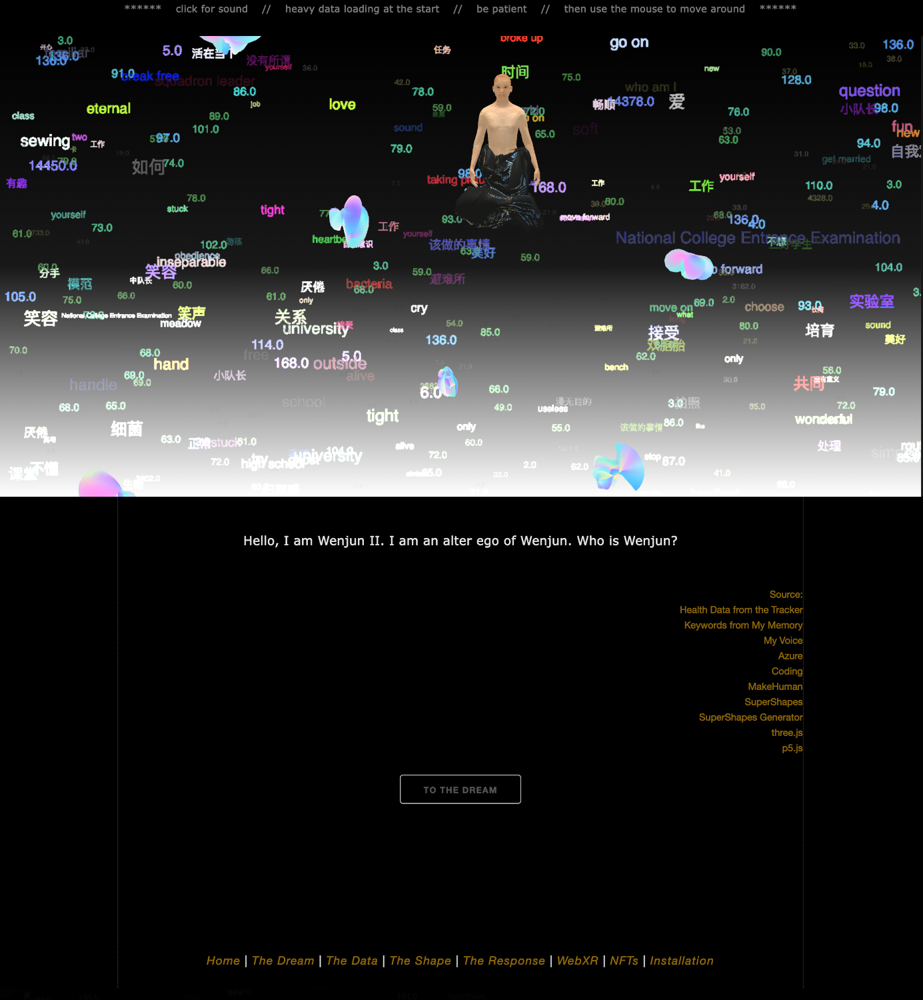

Email: wenjunfoto@gmail.com
Website: chenwenjun.net
Instagram: @wwenjunii
Aliens of Me is a self-exploration based on my personal data with internet-based technologies, utilizing the web, video, virtual reality, and installation. I am using keywords from my memories shared online and figures of my health data captured by my smartwatch to reconstruct myself through virtual avatars, a story of my growth, and new bodies in which to hold these avatars and stories. This also reflects my identity as a newcomer from China, migrating to an open new world that blends analog and digital.
We are generating more and more digital data, and virtual life is becoming increasingly dominant. Personal identities are becoming interchangeable and indistinguishable between the virtual and real worlds. Through this work, I explore the inter-transformative relationship between the real and the virtual, the tangible and the intangible, the material and the immaterial, and the thing and the non-thing.
Meanwhile, technology is also extending its tendrils into the most personal spheres of humans, commoditizing personal data as a lucrative venture. I aim to engage in the claiming of sovereignty over our personal data, creating a space where personal data transcends commercial value and morphs into a playground for self-reflection, artistic expression, creativity, and exploration.
This work was initiated on GitHub and developed into a narrative video, virtual reality, WebXR, and installation.
The project Aliens of Me started as a website on GitHub. It is about a virtual avatar constructing his identity from my personal data. Later, it developed into a narrative video and VR experience. This website consists of JavaScript (p5.js, three.js, tone.js), AI generation, and 3D production.
A WebXR experience of the project Aliens of Me. It is developed from the original project on the GitHub website and the narrative video. It is about a virtual avatar constructing his identity from my personal data. It is built on Mozilla Spoke.
WebXR: https://verse.loop.onland.io/PQBMpba/distant-different-dominion
A VR experience of the project Aliens of Me. It is developed from the original project on the GitHub website and the narrative video. It is about a virtual avatar constructing his identity from my personal data. It is built on Unreal Engine.